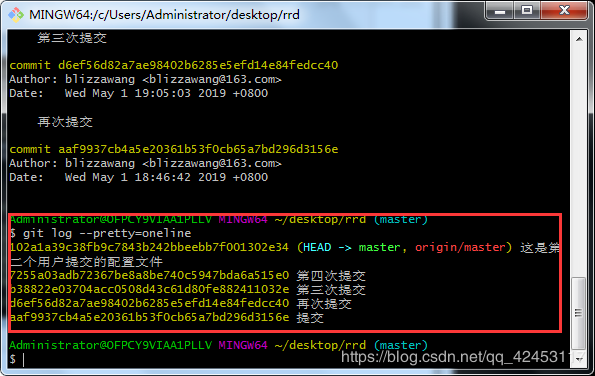
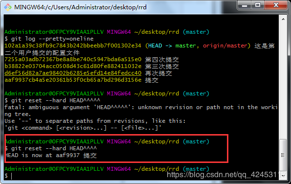
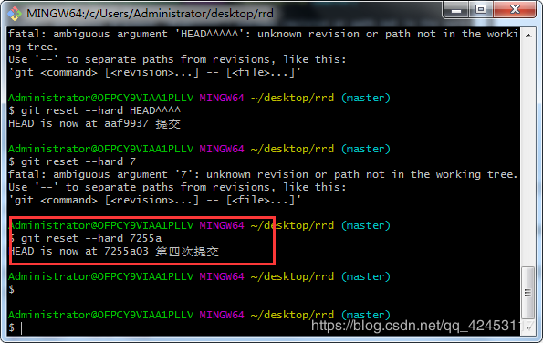
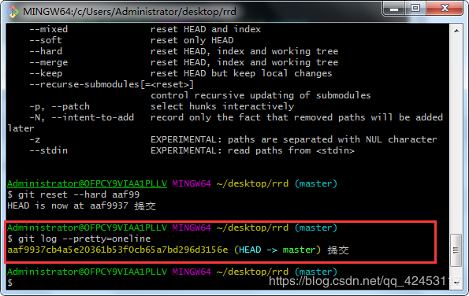
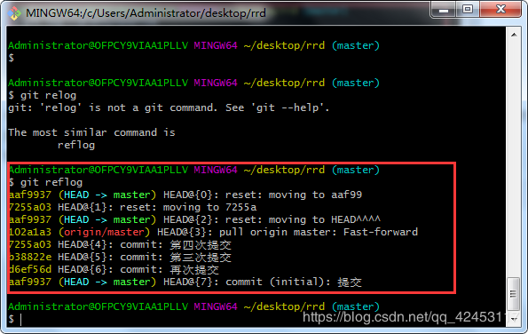

如果你想更清晰地学习git，你必须要了解3个重要区域。
当你在工作区进行开发工作时，git会记录你的改动，此时，你使用git add指令，该工作区的内容会被加入到暂存区，你仍然可以对你提交的文件进行撤回操作，然后你使用git commit指令，暂存区的内容会被提交到版本库。
每个文件/目录发生的版本变化，我们都可以追溯，命令为 git log
常用格式：
git log 查看项目的日志
git log
git log . 查看本目录的日志
至于每个命令的具体效果，可以试一试，看看打印信息。
如果感觉日志有点乱，可以输入
git log --pretty=oneline
可以看到，我们对该项目进行了五次修改，形成了五个版本，现在，我们学习一下版本切换。
我们现在将版本回退到最初始的时候，输入
git reset --hard HEAD^^^^你想回退几个版本就输入几个"^"符号。

这个时候版本就被回退到了初始时候，你可以回去看看你的工作目录，看看是不是回到了我们最开始时候的工作状态。
该指令只能用来回退版本，而且它不能清楚地知道指针的指向。所以我们用版本号来进行版本的切换。
版本号很长，但是我们不需要写出全部的版本号，只需要你写的版本号与别的版本不一致就可以。
我们输入
git reset --hard 7255a就切换到了我们的第四次提交。

那么接下来我把版本切换到最初始的版本。
我们输入
git reset --hard aaf99现在我们再输入
git log --pretty=oneline
会发现，输出日志的时候只显示了第一次提交的日志，这样其它次提交的版本号我就拿不到的，但是，我又想进行版本切换，该怎么办呢？
我们可以输入
git reflog
通过该条指令我们就可以获得所有版本的版本号了。